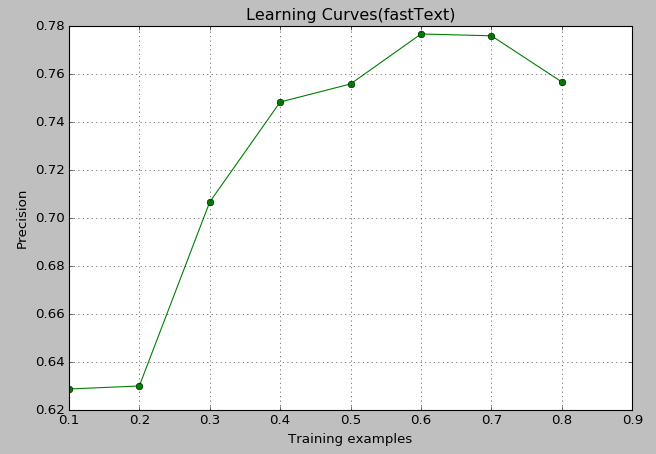

背景
前不久facebook开源了一个fastText工具，最近在网上传的挺火。
相关论文：
[1] P. Bojanowski, E. Grave, A. Joulin, T. Mikolov, Enriching Word Vectors with Subword Information
[2] A. Joulin, E. Grave, P. Bojanowski, T. Mikolov, Bag of Tricks for Efficient Text Classification
第一篇还没看，粗读了第二篇，fastText使用的模型和word2vec的模型确实很相似，论文中对模型的描述比较少（可能大牛觉得模型太简单了..）
论文给的实验结果来看也很漂亮，性能上比较了几个复杂的模型，准确率很相近，训练时间是一大亮点。
不过网上对该论文的评价不是很高，可能因为论文整体好像没有多少创新吧，我这样的菜鸡读过后的感觉就是简化了已有的模型跑出了不错的效果。
由于看起来性能和训练时间确实都不错，还是决定拿来跑一下。
准备工作
由于不熟悉C++，在github上找了一个python版本的fastText：https://github.com/salestock/fastText.py
在ubuntu上直接pip安装很顺利（PS：自己在win上安装会出错，好像和旧的VS版本不支持C99有关）
训练语料用的精简的搜狗新闻语料，貌似这个版本官网上找不到了，从百度网盘找到的资源：http://pan.baidu.com/s/1nvsBm5r
分词使用了jieba：https://github.com/fxsjy/jieba
新闻语料总共有9个类别，我从每个类别提取了100篇文章。按照fastText的输入要求，每行一句话（经过分词），并且加上类别标签，创建了一个大约3.M的训练集。
训练集的格式：
一家 刚刚 成立 两年 的 网络 支付 公司 它 的 目标 是 成为 市值 亿美元 的 上市公司 __labelC000008
三是 对 霍尔木兹海峡 马六甲海峡 等 实施 控制 战时 实施 有效 的 海上 封锁 \labelC000024
这个 一向 自视 极高 并 被 族人 寄予厚望 的 人 精神 心理 受 的 打击 很大 \label__C000023
…
其中label是类别前缀，这个前缀可以自定义。
自己构造的这3.5M数据中大概有26000+的样本。
由于新闻语料中带有一些记者信息，例如“本报记者 XXX..报道”这样的句子，这种语句样本对分类任务来说明显是干扰项，由于这类句子的格式不统一，这里没有做过滤。另外这种样本的数量对总训练集来说很少，应该对结果影响应该很小。
分类实验
将数据集分成7:3的比例，前面用来训练，后面用来验证模型。
算法默认的迭代次数是5，尝试了几次发现10-30比较合适，在验证集上的准确率在78%左右。
python代码：

总样本就是之前说过的26000+，横坐标是使用的训练样本的比例，验证的样本数量为剩余中随机选取的500个。
从0.7后面下降的位置实际上是不太合理的，因为算法接口的原因，这张图绘制的时候每次都是经过重新采样学习的，有一定的误差在里面。
但是总体上看1W多样本的时候已经接近78%的准确率了，后续增加样本基本不起作用，实际情况和语料还是有一定关系的。
总结
在搜狗新闻语料的9分类任务上准确率大约是78%，由于以前没研究过文本分类，对这个准确率好坏没有很直观的感受。
纯粹从个人角度看觉得效果还是可以的，因为该算法是对每一句预测标签的，然而一些句子信息可能本身就是中性的，所以如果在文章分类任务中，可能将句子的标签再做投票选择最高的，或者从概率层面做进一步的处理，最终的效果可能会更好。
另外一点感受就是，这个算法用起来是真方便，中文分完词丢进去就可以了。